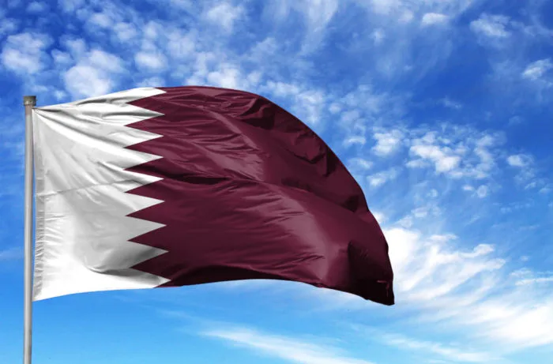

A economia baseia-se, especialmente, na exportação de petróleo e gás natural, que juntos representam em torno de 50% do Produto Interno Bruto do país.
De acordo com o Observatório da Complexidade Econômica, o Catar possui uma balança comercial positiva com saldo de US$30,7 bilhões.